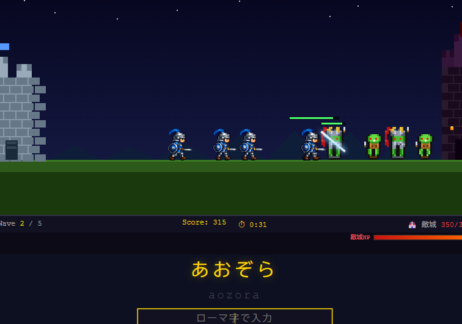
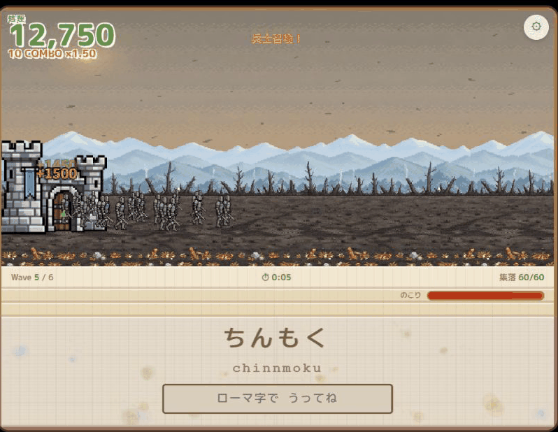

Soldier Typing
A military-style typing game where you type to summon soldiers and fight off a monster army. The keystroke rhythm is deeply satisfying. Played with a keyboard, for PC.

Read the guide below, or load the game when you are ready.
Best played on a PC with a keyboard. English controls and help are available; the practice text and story are Japanese - you type hiragana words using romaji (Latin letters), so it's great practice if you're learning Japanese. If you use Japanese input software, turn the IME off before you start.
Ranking
Scores from players who cleared the game — see how you stack up. Enter a name when you finish a run, or your score won't appear on the board.
Type romaji to summon soldiers and hold the line against a horde of monsters. The more you type, the more soldiers march out — they advance and fight on their own. Keep enemies away from your castle and take down the boss of each wave. A keyboard game for PC, and since the words are Japanese (shown in hiragana, typed in romaji), it doubles as Japanese typing practice.
Before you play: this is a keyboard game, so PC is recommended. If you have a Japanese IME installed, switch it off first.
The word lists, boss stats and controls below come from the game itself, as of September 2026.
At a Glance
| Genre | Typing / lane defense |
|---|---|
| Price | Free, no install, no sign-up |
| Platform | PC recommended (keyboard controls) |
| Input | Romaji (Latin letters; turn Japanese IME off if you have one) |
| Language | English controls and help; Japanese practice text — type hiragana words in romaji |
| Length | 5 waves, 5 bosses |
| Vocabulary | 150 entries across five 30-entry pools; 139 distinct kana prompts |
| Music | 6 distinct audio files assigned to 7 music cues |
| Ranking | Online, shared by all players |
| Sequel | Soldier Typing 2 |
How to Play
- Type the romaji shown at the bottom of the screen accurately to summon a soldier
- Soldiers automatically march toward the enemy and fight without further input
- If enemies reduce your castle’s HP to zero, it’s game over
- Defeat the boss of every wave (waves 1–5) to win
Copy the displayed Latin letters to finish a word and summon a soldier. After a wave-clear message, wait for the continue prompt and press Enter. A wave can end by defeating its boss or, in waves 1–4, destroying the enemy castle after the boss appears. In wave 5, the castle is protected while the final boss is alive.
The Words
Each wave has 30 entries. Some recur across waves: for example, ゆうしゃ appears in waves 2 and 3, and ほのお in waves 2 and 4. There are 139 distinct kana prompts across all 150 entries.
The first pool uses one- and two-kana words such as ひ and ねこ. Later pools include longer words and small kana. Copy the romaji shown rather than guessing an English spelling. These are Japanese input exercises; the game does not provide English definitions for the vocabulary.
The Bosses
A boss appears when an allied unit reaches enemy territory, or after 90 seconds of active wave time if it has not appeared yet. That timer guarantees a boss spawn, not that the wave ends within 90 seconds.
- Amoeba — 500 HP, 5 damage. The tutorial in monster form
- Nyalga, the Flying Magic Cat — 3,600 HP. 7.2 times the health of the first boss, arriving one wave later
- Vel, the Great Bat of the Night Sky — 3,200 HP but faster and hitting harder than Nyalga; the health bar is not the whole story
Show the wave 4 and wave 5 bosses (spoilers)
Wave 4 is the Demon Lord, and the numbers are deliberately strange: 1,600 HP, the lowest of any boss after the first, paired with 24 damage a hit and the slowest base movement among these five bosses. Its boss cue uses the same audio file as the wave-3 boss cue.
Wave 5 is God: 9,600 HP, 42 damage, and a base attack range of 110, the longest of these five bosses. Keep completing prompts to replace lost soldiers.
How the Characters Are Drawn
The game mixes PNG character images with canvas-drawn pixel sprites. The source contains pixel patterns for ten character types, but several characters use image files when available. Some sprites have two animation frames; some boss fallbacks reuse the same frame. The game also loads separate music files.
When the Battlefield Seems Stuck
If no boss is visible, keep completing words and watch the wave timer. A soldier reaching enemy territory can trigger it before the 90-second fallback. After clearing a wave, the game waits for Enter to continue. These are different states: waiting for a boss is not the same as waiting for the next wave.
A Lesson from Development
The 90-second forced boss was a late addition. In an earlier build, I ran into a progression problem with fast typists clearing the field and waiting for the next fight. I added a time limit so a wave could not wait indefinitely for its boss. In the current build, the boss appears when an ally reaches the trigger position or the wave reaches 90 seconds. That timer starts the fight; it does not end the wave automatically.
Wave triggers, boss stats and every control are listed in the Soldier Typing strategy notes.
FAQ
- Can I play on a phone?
- It's a keyboard game, so we recommend playing on a PC.
- My keystrokes aren't registering correctly.
- You summon soldiers by typing romaji (Latin letters). If you use Japanese input software, turn the IME off before you start.
- Do I need to read Japanese?
- No. The words are shown in hiragana with the romaji spelled out, and you type the romaji. You do not need to know what any of them mean, though it is decent practice if you are learning.
- How do I win?
- Clear all five waves to finish. In waves 1–4, defeating the boss or destroying the enemy castle after it appears can clear the wave; the final boss must be defeated. If enemies reduce your castle’s HP to zero, it’s game over.
- Nothing is happening and there's no boss.
- After 90 seconds of active wave time, the boss appears if it has not spawned. If the wave-clear message is showing, wait for the continue prompt and press Enter.
- Does my score go anywhere?
- Enter a name when you start and your score reaches the online ranking board above, which everyone playing shares. Soldier Typing 2 keeps a separate table, so scores from the two games never mix.
- Do I need to play this before the sequel?
- No. Soldier Typing 2 stands on its own, though it does assume your hands already know the loop.
There Is a Sequel
Soldier Typing 2 runs on the same keystrokes, goes six waves instead of five, and hides a boss that is not on the map. It is free and it plays in the browser the same way this one does.

Soldier Typing 2 Six waves, a hidden boss, and a door that opens only after you win.